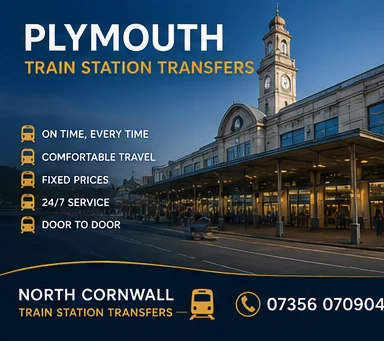
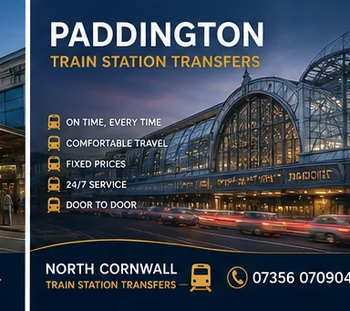
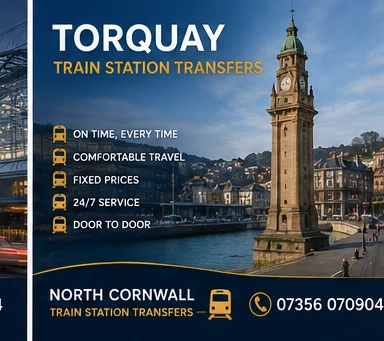
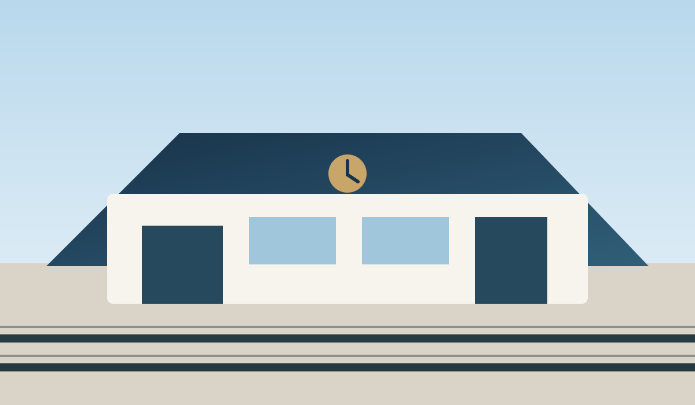

Rail connections
Train station transfers
Private pre-booked station pickups and departures for local and long-distance rail connections.


London Paddington
Long-distance transfers for London Paddington connections.
View transfer details →

Bodmin Parkway
Private transfers for Bodmin Parkway and onward rail connections.
View transfer details →Newquay Station
Private transfers for Newquay railway station and surrounding areas.
View transfer details →